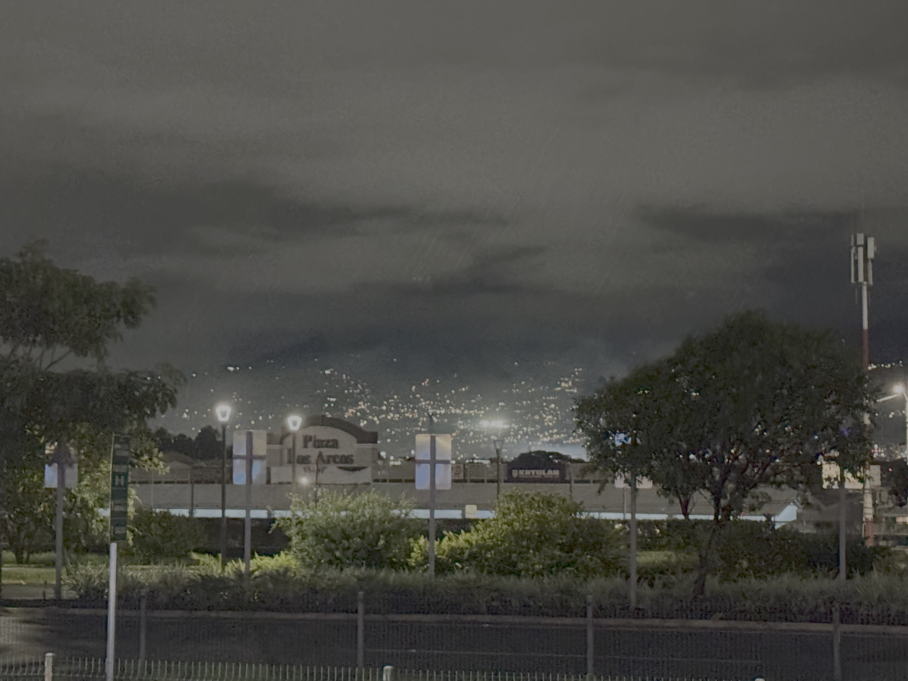

CSCW 2024 in San Jose, Costa Rica!
2024 November 12
Greetings from Costa Rica! I am currently attending CSCW 2024 in San Jose. This is my first CSCW (and first computing-related conference in general); I've been enjoying meeting lots of new people, making new friends, and learning about research in the field right now.
I am presenting two different papers on Wednesday, Nov. 13th, for the "Content Moderation and Marginalized Experiences" panel:
- Content Moderation Folk Theories And Perceptions of Platform Spirit Among Marginalized Social Media Users (Samuel Mayworm, Michael Ann DeVito, Daniel Delmonaco, Hibby Thach, Oliver L. Haimson)
- The Online Identity Help Center: Designing and Developing a Content Moderation Policy Resource for Marginalized Social Media Users (Samuel Mayworm, Shannon Li, Hibby Thach, Daniel Delmonaco, Christian Paneda, Andrea Wegner, Oliver L. Haimson)
This will be my first time presenting at a conference, so I am both nervous and very excited!
I am also excited for my peers'/advisors'/fellow lab members' presentations at CSCW this year (bolded names are presenters):
- Extended Reality Trans Technologies: Bridging Digital and Physical Worlds to Support Transgender People (Oliver L. Haimson, Aloe DeGuia, Rana Saber, Kat Brewster)
- The Sociotechnical Stack: Opportunities for Social Computing Research in Non-Consensual Intimate Media (Li Qiwei, Allison McDonald, Oliver L. Haimson, Sarita Shoenebeck, Eric Gilbert)
- “What are you doing, TikTok?” : How Marginalized Social Media Users Perceive, Theorize, and “Prove” Shadowbanning (Daniel Delmonaco, Samuel Mayworm, Hibby Thach, Josh Guberman, Aurelia Augusta, Oliver L. Haimson)
- “I’m Constantly in This Dilemma”: How Migrant Technology Professionals Perceive Social Media Recommendation Algorithms (Cassidy Pyle, Ben Zefeng Zhang, Oliver L. Haimson, Nazanin Andalibi)
A quick note: I promised in September that I would deploy my website design overhaul by October 1st -- this obviously did not happen because PhD programs are very hard and I am very busy all the time, so I only have time to work on the redesign on weekends. The good news is that the overhaul is almost done! I plan on rolling out the redesign as soon as possible, aka once I've finished debugging (and figuring out why the sidebar formats oddly on the iPad Air) and testing for accessibility. For now, I hope to deploy the redesign "before 2025" -- we'll see if this actually happens 😅